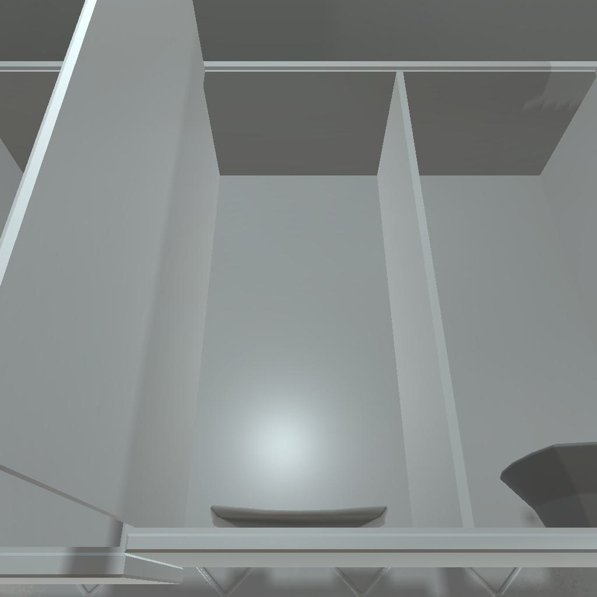

---------------------------------------------------------task: 21---------------------------------------------------------
--------------------------------------------------------------------------------------------------------------------------------------------------------------------
--------------------------------------------------------------------------------------------------------------------------------------------------------------------
Step:--------------------------------------------------------------------------18-------------------------------------------------------------------------------
----------------------------------------
VLM Prompt:
Image1:
Image2:
Image3:
**Instruction**
1. Analyze the provided images to identify all visible household objects and compare the difference between images (e.h. whether the object is opened or not and taken on hand or not), focusing on those relevant to the task description "heat some cup and put it in countertop."
2. Use the analysis of images and the task hint "The agent must find an object of the desired type, pick it up, go to a microwave, heat the object with the microwave, then find the correct location to place it, and put it down there. The agent does not need to use the microwave button or open the microwave to heat the object, and the agent just needs to do action that is "heat the object with the microwave"." to answer the question: what is the most reasonable action in the choices for the task description "heat some cup and put it in countertop"?
3. Decide and write the answer using the template: The answer is: (i): , where i is the real number. If there is no desired object in images, search every place based on **Initial Observation** to find the object. And if no one is exactly correct, choose a similar answer.
**Initial Observation**
You are in the middle of a room. Looking quickly around you, you can see cabinet (1-6), microwave (1), countertop (1-2), coffeemachine (1), toaster (1), sink (1), sinkbasin (1), fridge (1)
**Answer Choices**
(1): go to cabinet 1
(2): go to cabinet 3
(3): go to microwave 1
(4): go to cabinet 4
(5): go to cabinet 5
(6): go to cabinet 6
(7): go to countertop 1
(8): go to coffeemachine 1
(9): go to toaster 1
(10): go to countertop 2
(11): go to sink 1
(12): go to sinkbasin 1
(13): go to fridge 1
(14): close cabinet 2
(15): take bowl 1 from cabinet 2
(16): take plate 1 from cabinet 2
**Answer**
Let's think step by step by following the instructions.
----------------------------------------
----------------------------------------
Original Response:
Analysis:
- In all three images, we can see the interior of a cabinet with two shelves.
- On the bottom shelf of the cabinet, there is a bowl-like object on the left and a plate-like object on the right.
- The cabinet door appears to be open in all images.
- There is no visible change in the position or state of the objects between the images.
- These images do not provide information about the location of the microwave or the countertop.
Based on the task description "heat some cup and put it in countertop" and the hint provided:
- The agent needs to find a cup to heat in the microwave.
- The images show a bowl, which might not be the desired object for heating, as the task specifies a "cup."
- The agent does not need to interact with the microwave buttons or doors to complete the task.
Considering the **Initial Observation** and the **Answer Choices**:
- There is no cup visible in the images provided.
- The agent should search for a cup in other locations mentioned in the **Initial Observation**.
The most reasonable action for the task would be to search the cabinets, as cups are typically stored in cabinets. Since cabinet 2 is already open and does not contain a cup, the agent should check other cabinets.
The answer is: (1): go to cabinet 1. If the cup is not found there, continue searching other cabinets or the countertop near the coffeemachine, as cups are sometimes left there after use.
----------------------------------------
----------------------------------------
>>> Refine Original VLM Response and Get Pure Action: go to cabinet 1
----------------------------------------
-----------------------------------------------------------------
Running time: 11.712030410766602 seconds
Total Money: 13.441949999999997
-----------------------------------------------------------------
-----------------------------------------------------------------
Text Observation:You arrive at loc 0. The cabinet 1 is open. On the cabinet 1, you see a bowl 1, and a plate 1.
-----------------------------------------------------------------
UNSUCCEED